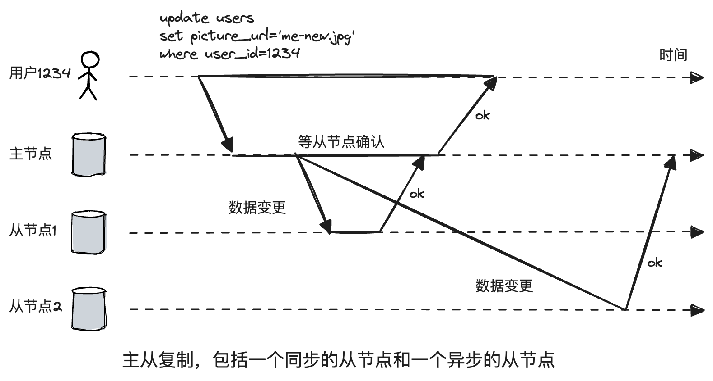
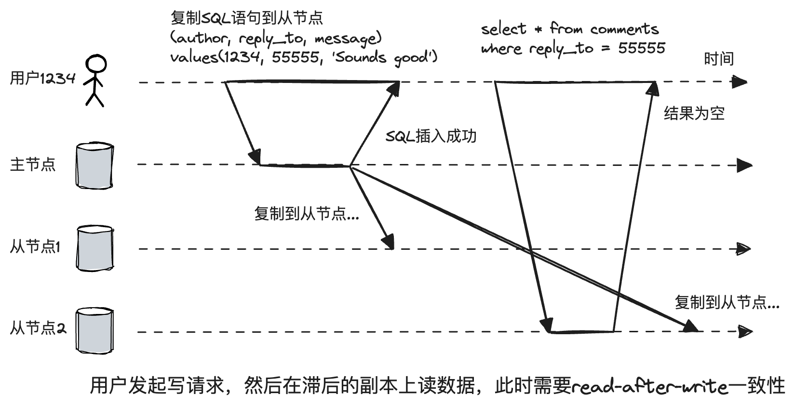
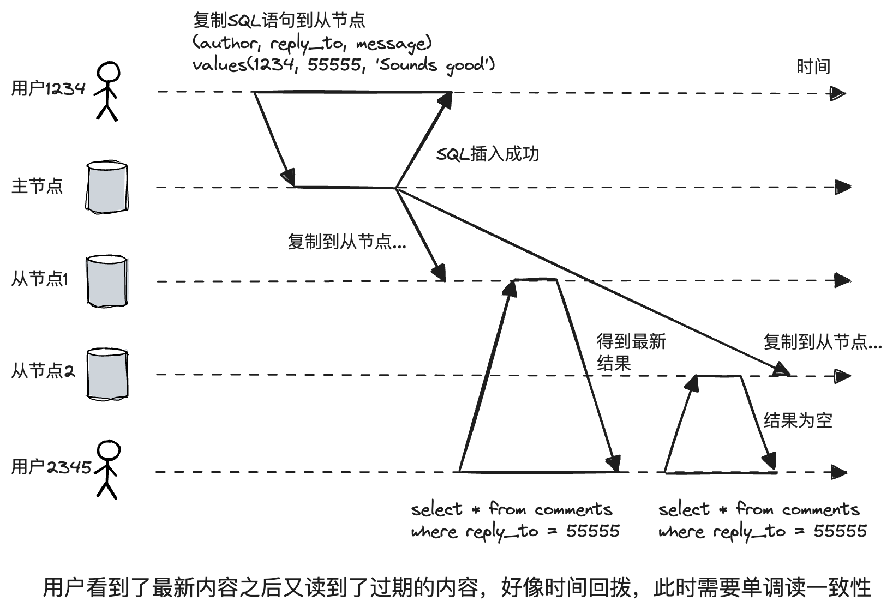
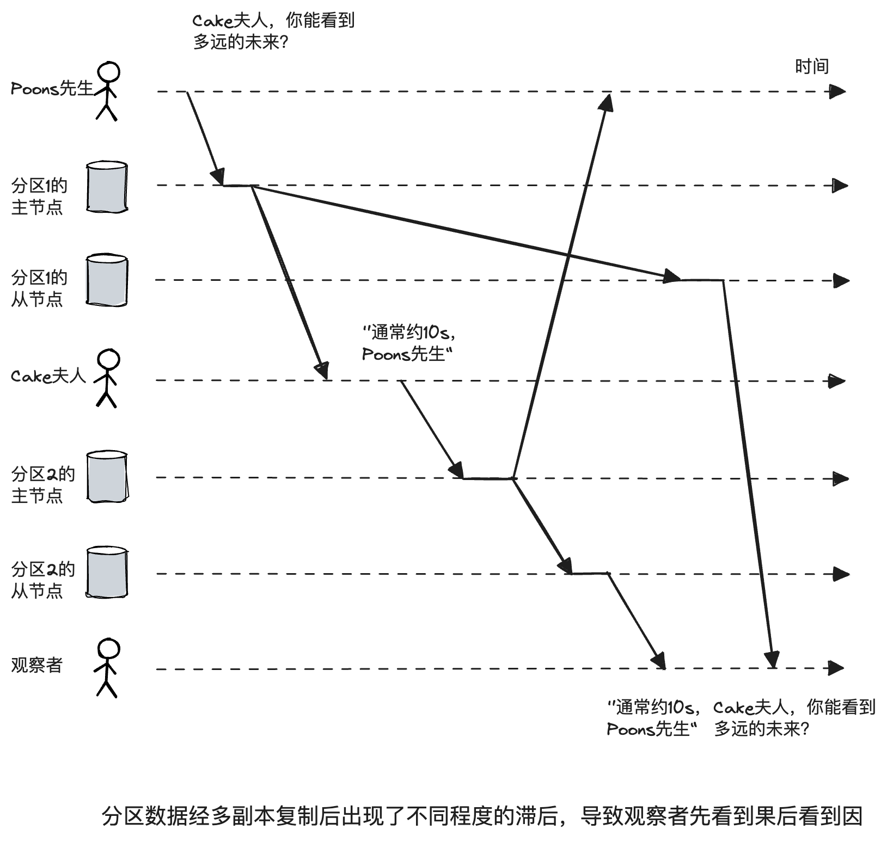
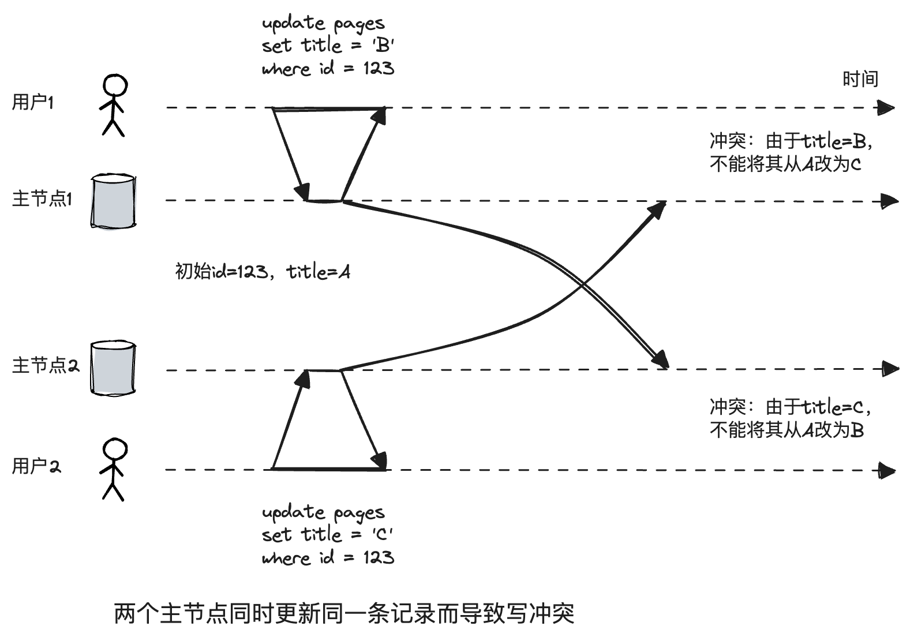
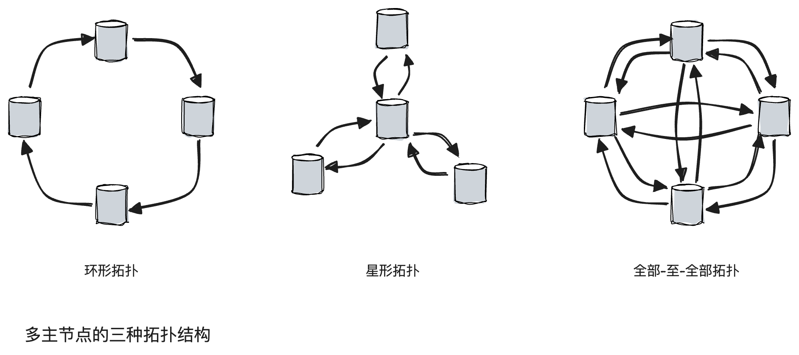
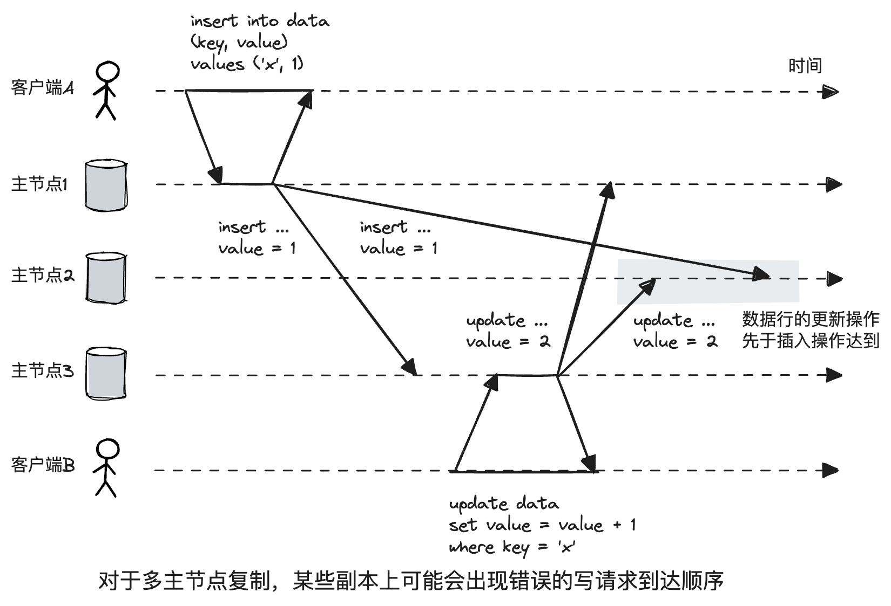
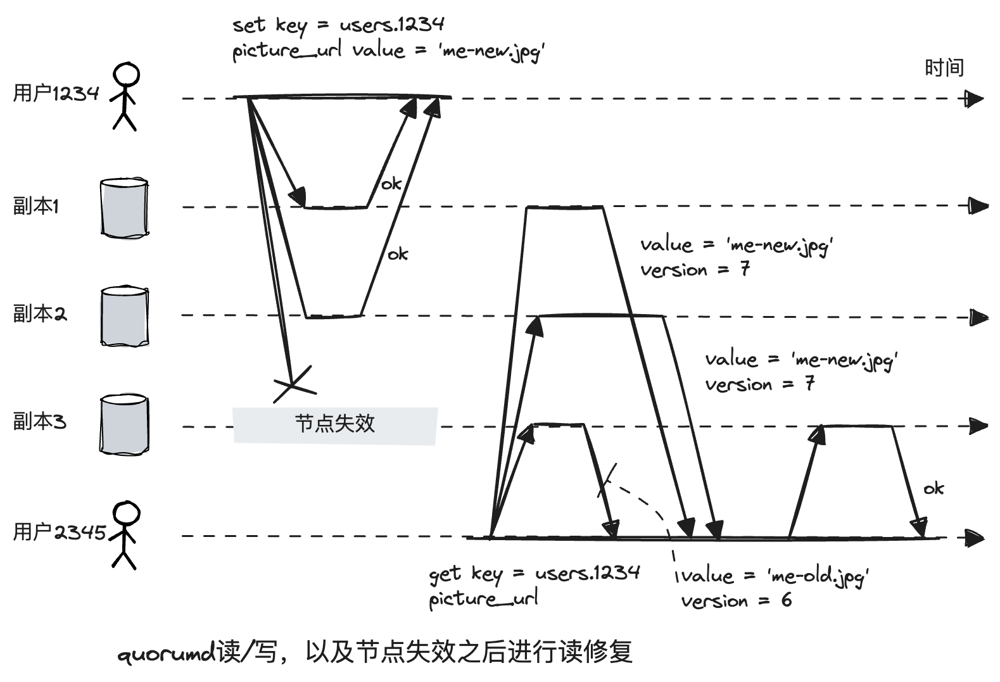
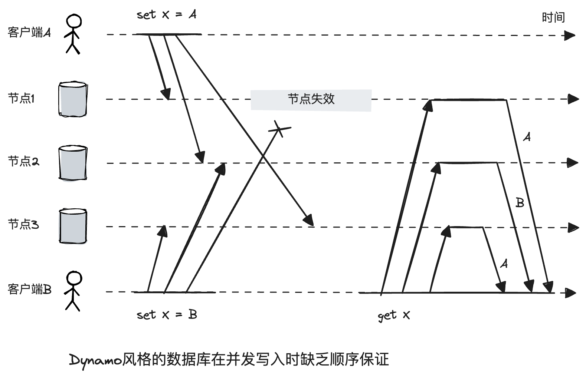
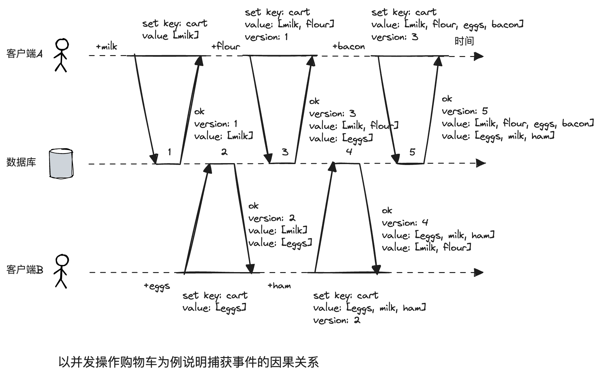

第5章 数据复制
本章主要介绍数据复制的技术，问题及挑战，解决方案。
复制或多副本技术的意义：
- 高可用：避免单点故障。
- 低时延：将数据放置在靠近用户的地方，从而实现更快的交互。
- 扩展性：采用多副本读取，提高系统的吞吐量。
主从复制（一主多从）
最主流的复制方案，许多关系数据库都内置支持主从复制，包括PostgreSQL（9.0版本之后）、MySQl、Oracle Data Guard和SQL Server的AlwaysOn Availability Groups，非关系数据库如MongoDB、RethinkDB和Espresso也支持主从复制。还有一些分布式队列如Kafka和RabbitMQ都支持。
同步复制和异步复制
同步复制的好处是一旦向用户确认，复制已经完成了，缺点是阻塞所有的写操作。异步复制就反过来了。

不过，同步和异步并不是那么泾渭分明，还有一种半同步模式，它的做法是将其中一个副本设置为同步的，其余的为异步，这样至少有两个节点（主节点和这个节点）拥有最新的副本。
增加新节点
快照文件+修改日志的方式
节点失效
如果从节点失效，恢复后可以比对日志，追赶主节点。
如果主节点失效，需要选出一个新的主节点，这个过程称为切换。
切换涉及的步骤：
- 探活：一般基于超时的心跳机制。
- 选举新的主节点。
- 配置系统使新主节点生效。
典型问题，比如脑裂，是说有两个节点都认为自己是主节点的情况。超时时间如何设置，长的话，恢复时间比较长，短的话，会造成不必要的切换。
具体的复制技术
基于语句
比如SQL语句记录，但是会存在如下问题：
- 非确定函数，比如
NOW()、RAND()，可能会在不同的副本上产生不同的值。 - 使用了自增列，或者依赖现有数据，例如UPDATE … WHERE。
- 有副作用的语句，比如触发器、存储过程、用户定义的函数等，可能会在不同的副本上产生不同的副作用。
基于预写日志（WAL）
比较偏底层，一个WAL包含了哪些磁盘块的哪些字节发生变化，诸如此类的细节。
基于行的逻辑日志
逻辑日志与具体存储引擎解耦，更有利于向后兼容性。
- 行插入，日志包含所有列的新值。
- 行删除，日志里有行的唯一标识，通常为主键，如果表没有主键，就包含所有列的旧值。- 行更新，日志里包含行的唯一标识，和列的所有新值。
MySQL的binlog（配置为行复制）就属于这一类。
复制滞后问题
使用最终一致性系统时，最好事先就思考这样的问题：如果复制延迟增加到几分钟甚至几小时，那么应用层的行为会是什么样子？如果答案是“没问题”，那没得说，否则就得考虑提供一个比最终一致性强的保证。
读自己的写
用户在写入不久即查看数据，新数据还未到达从节点。对用户来讲，看起来似乎刚才提交的数据丢失了。对于这种情况，需要“写后读一致性”。

典型方案：
- 用户访问可能会修改的内容，从主节点读取，否则，从从节点读取。比如，社交网络的个人主页从主节点读，他人主页从从节点读。
- 跟踪最新的修改时间，如果是一分钟之内，从主节点读取。
- 如果副本分布在多数据中心，需要先把请求路由到主节点所在的数据中心。
如果允许用户多设备登录，还需要考虑：
- 更新时间戳需要做到全局共享。
- 多数据中心部署的应用，还要将多设备的请求都路由到主节点所在的数据中心。
单调读
用户看到了新内容后，又读到了过期的内容，好像时间回拨，此时需要单调一致性。这是一个比强一致性弱，又比最终一致性强的保证。

实现方式之一是，确保用户总是固定的从某个节点读取，比如对用户id进行哈希。
前缀一致读
必须先看到“问题”，再看到“回答”，而不能反过来，这种保证叫做前缀一致读。

一个解决方案，确保任何具有因果顺序关系的写入都交给一个分区来完成，但该方案真实实现效率会大打折扣。
基于触发器
可以配置自定义代码在某种事件下。
灵活性最高，性能最差。
多主节点复制
主从复制有主节点单点故障的缺陷，因此自然有人想到设置多个主节点，每个主节点都可以接受写入，被写入的主节点再将数据同步给其他主节点。
使用场景：
- 多数据中心
- 离线客户端操作，比如日历软件，一个设备就相当于一个数据中心。
- 协作编辑，每个正在编辑用户都是一个数据中心。
处理写冲突
多主的一大问题是写冲突。

一种方法是避免冲突，比如将修改的请求都路由到特定的数据中心。
第二种方法是使状态收敛于一致的状态。具体实现方法：
- 给每个写入都分配一个唯一的ID，比如时间戳、一个比较长的随机数，挑选最高的ID获胜，这种技术被称为最后写入者获胜（last write wins, LWW）。
- 以某种方式合并值。比如上文中，合并的标题类似于“B/C”。
- 利用预定义的格式保存所有值，提示用户解决冲突，类似于git，和cf。
拓扑结构
环形、星形、全部-至-全部。

环形、星形有中间节点单点故障问题，全部-至-全部由于每个主节点的延时不同，有类似于前缀读的问题。

对于多主节点复制，某些副本上可能会出现错误的写请求到达顺序，可以使用版本向量解决。
无主节点复制
放弃主节点，允许任何副本直接接受来自客户端的写请求。一些实现是客户端直接将请求发送给多副本，另一些实现，由一个协调者代表客户端写入。
代表产品：Dynamo、Riak、Cassandra、Voldemort，因为Dynamo后面几种都是受Dynamo启发设计的，所以称之为Dynamo风格数据库。
失效节点重新上线后的两种处理机制：
- 读修复。客户端读取多个副本时，检测到掉线节点版本较旧，就用新值更新。这种方法适合频繁读取的场景。
- 反熵。后台进程不断查找副本之间的差异，将缺少的数据从一个副本复制到另一个副本。

读写quorum
如果有n个副本，写入需要w个节点确认，读取需要r个节点确认，w + r > n，读取的节点中一定包含最新值。
当一个集群的节点大部分失效，已经无法满足仲裁的需求，这个时候面临着：
- 直接向用户报错。
- 将请求导向一些临时节点，等恢复后再将数据回传回来，这些节点不属于原来的n个节点。
后一种措施就是宽松的（sloppy）quorum。
所有的Dynamo风格的数据库都支持sloppy quorum。Riak默认启用，Cassandra和Voldemort默认关闭。

检测并发写
一种实现最终收敛的方法是最后写入者获胜LWW。但LWW会导致数据丢失问题。
在分布式环境中并发的含义是两个操作没有依赖关系，比如happen-before。基于此，两个操作A和B只有三种关系，A在B之前发生，B在A之前发生，A和B并发。依赖关系可以覆盖，并发不能覆盖。
对于不能覆盖的情况，需要合并值。方法是一种基于版本向量的算法。

以两个客户端并行操作购物车为例，它的算法运行步骤如上图所示：
- 客户端A首先添加了milk，服务器返回(version: 1, value: [milk])。
- 客户端B随后添加了eggs，服务器返回(version: 2, value: [eggs])和(version: 1, value: [milk])，客户端将值进行合并，并选择所有值最高的版本号，(version: 2, value: [eggs, milk])。
- 接着客户端A又添加了flour，注意他是在version1的基础上添加的，因此他发给服务器的是(version: 1, value: [milk, flour])，服务器意识到version1的值得到了更新，所以覆盖老的值，最终返回(version: 3, value: [milk, flour])和(version: 2, value: [eggs])，客户端A收到值进行合并(version: 3, value: [milk, flour, eggs])。
- 接着客户端B也添加了新的物品ham，和步骤3类似，他是在version2的基础上添加的，也就是发给服务器的是(version: 2, value: [eggs, milk, ham])，服务器更新version2的值，最终返回(version: 4, value: [eggs, milk, ham])和(version: 3, value: [milk, flour])，客户端B合并值，得到(version: 4, value: [eggs, milk, ham, flour])。
- 这时客户端A又添加了bacon，也就是在version3的基础上加上bacon——(version: 3, value: [milk, flour, eggs, bacon]，服务器覆盖version3的值，返回(version: 5, value: [milk, flour, eggs, bacon])和(version: 4, value: [eggs, milk, ham]，客户端A最终得到(version: 5, value: [milk, flour, eggs, bacon, ham])。
上面示例的因果关系如下所示。